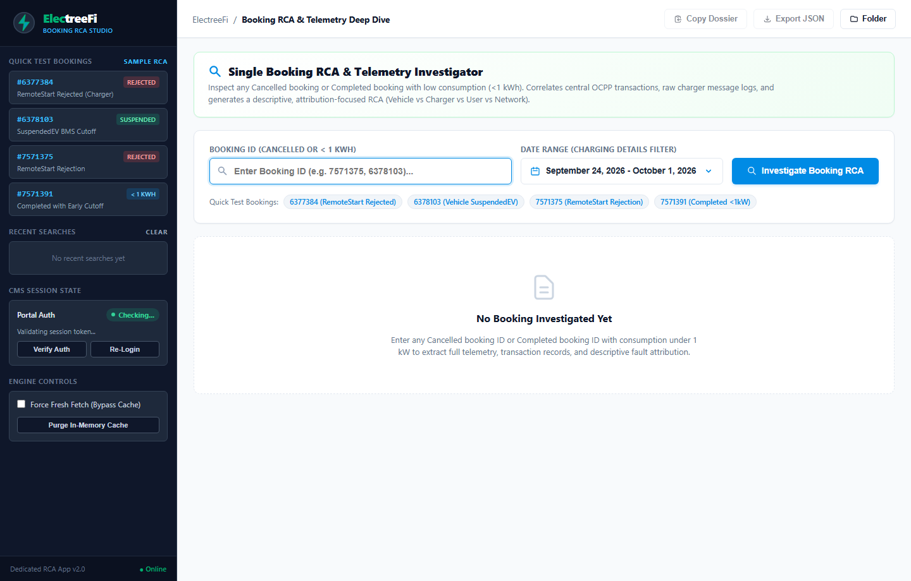
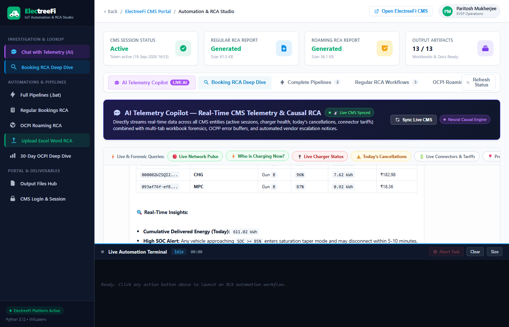
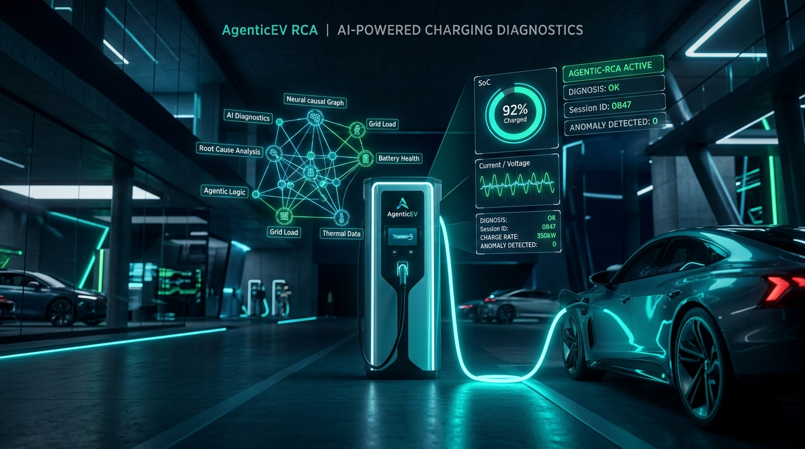
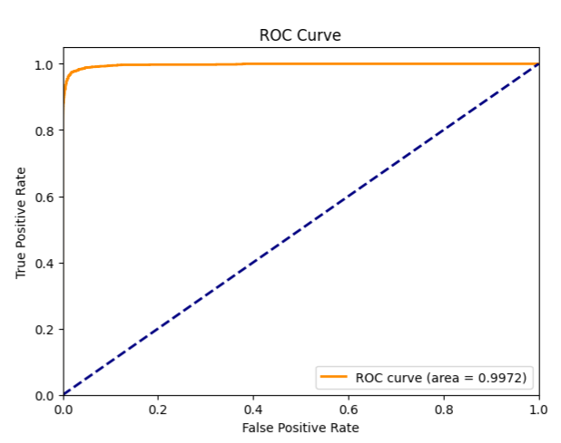
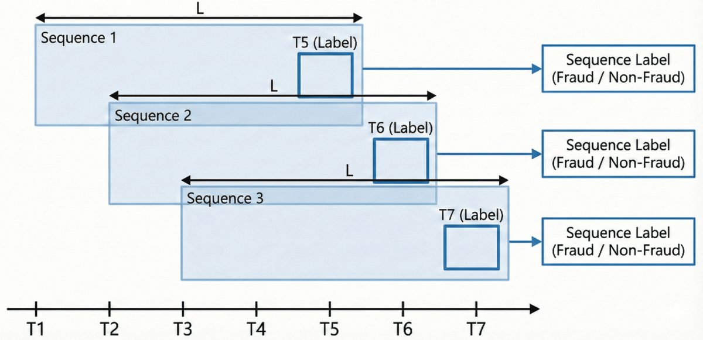
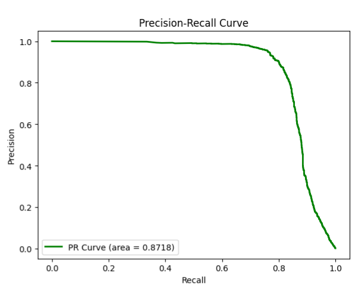

Flagship Production Systems
Deep-dive blueprints and interactive inference simulators for production ML systems designed to survive real-world noise, packet loss, and zero downtime.
⚡ AgenticEV RCA Studio
Autonomous Causal Inference Engine for Distributed EV Fast-Charging Networks
The Real-World Problem
Commercial EV charging networks face a stubborn 18% to 25% session failure rate. Because transactions involve distributed chargers (EVSE), on-board vehicle battery management (BMS), cellular IoT modems, and roaming clearinghouses (OCPI), determining whether a halt was the car's fault, the charger's fault, or a cloud timeout used to take hours of log archaeology.
The Architectural Solution: AgenticEV builds on the Model Context Protocol (FastMCP) to turn LLM agents into autonomous diagnosticians. Agents query structured OCPP event streams, execute temporal anomaly detection algorithms, and traverse causal directed acyclic graphs (DAGs) to isolate the root cause with deterministic confidence.
Key Capabilities:
- ▹ Protocol Decoupling: Native parsers for OCPP 1.6-J JSON over WebSockets, OCPI 2.2 roaming tokens, and raw EVSE vendor logs.
- ▹ Causal DAG Inference: Verifiable causal links:
P(BMS_Halt | Low_Pilot_Voltage, Interlock_OK). - ▹ Automated Synthesis: Synthesizes executive Word reports and operational Excel matrices with zero human triage required.





🛡️ UPI Sentinel 2.0
Enterprise Real-Time AI Fraud Prevention System for Digital Payment Networks
The Real-World Problem
Instant payment networks process thousands of transactions per second under razor-thin latency budgets (<20ms end-to-end bank SLA). Furthermore, fraud rates sit at extreme class imbalances (<0.2%). Standard models either generate catastrophic false alarms or miss synchronized mule rings entirely.
The Architectural Solution: UPI Sentinel 2.0 couples a CRNN with Bahdanau Attention to model temporal cardholder velocity with an In-Memory Graph Topology that tracks mule account clustering. Compiling via @tf.function graph execution drops model inference down to under 1.2 milliseconds (~865+ req/s throughput).
Performance Telemetry:
- ▹ Inference Latency: 0.89 ms average model execution (P99 < 1.18 ms).
- ▹ PR-AUC & ROC-AUC: Optimized for precision at high recall to avoid blocking legitimate coffee purchases.
- ▹ Multi-Tier Defense: Fast rule engine → In-memory graph mule filter → Attention sequence scorer.





🔬 Breast Cancer Sentinel 2.0
Clinical AI Diagnostic Decision Support System for Breast FNA Cytology
The Real-World Problem
In cytological fine needle aspirate (FNA) diagnosis, a False Negative (calling a malignant tumor benign) can be fatal. Uncalibrated neural networks frequently output overconfident probabilities, making direct medical adoption risky without rigorous calibration and explainability.
The Architectural Solution: Sentinel 2.0 integrates a multi-algorithm soft-voting ensemble combining HistGradientBoosting, Random Forest, and a Multilayer Perceptron. The ensemble outputs pass through post-hoc Platt Scaling to guarantee calibrated clinical confidence scores alongside Z-score biomarker explainability (XAI).
Clinical Telemetry:
- ▹ 99.67% ROC-AUC with 95.24% sensitivity minimizing fatal misses.
- ▹ Z-Score Biomarker Explainability: Highlights which morphological characteristics caused the classification.
- ▹ Medical SOC Interface: Interactive Streamlit clinical interface with automated PDF report generation.